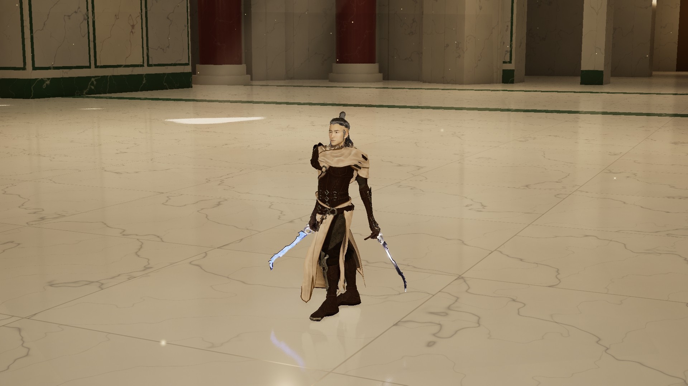
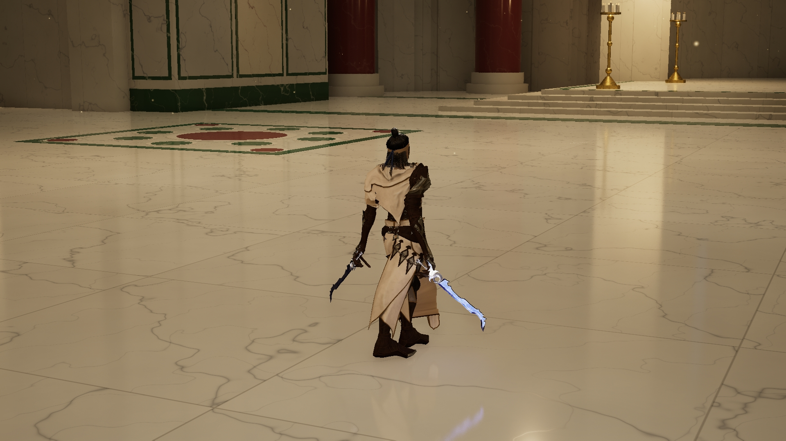

← Lightblade 独立评审 · 五角色整合Assassin 轻装 · 第一轮 UE 试穿
已换上白布、深色皮革与单肩轻甲。保留原来的脸、头发、蓝色晶刃双剑与原生骨架。
这是静态试穿中间结果，尚未定型。肩颈披布存在黑色穿插，正在修权重；还未通过闪避、攻击与长布摆动作检查。此处先展示实际问题，方便提前评审。
正面

背面

服装：Assassin Character Model — glenfernandes66，CC BY 4.0。改动：去除兜帽与原头部，适配原角色骨架、穿戴与权重。蓝剑：The Crystal Elemental Sword — nodgerty，CC BY 4.0。原角色：Epic Games Paragon Kwang。